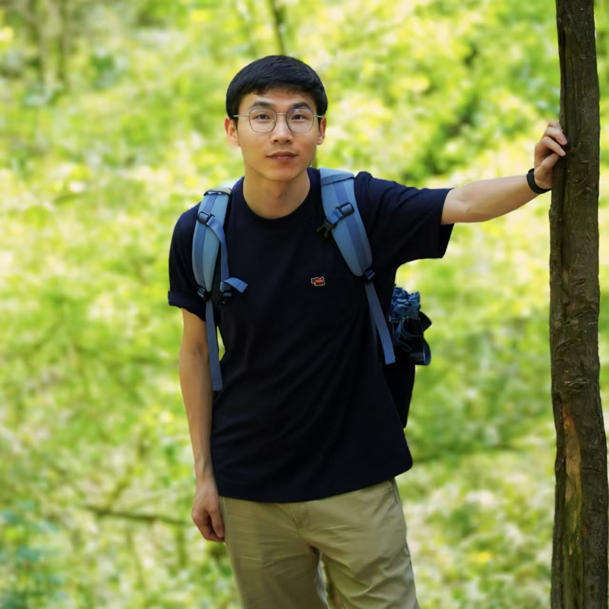
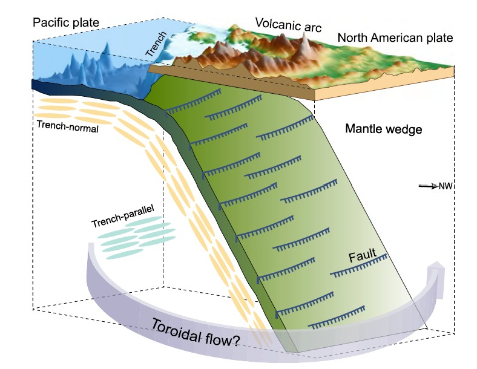
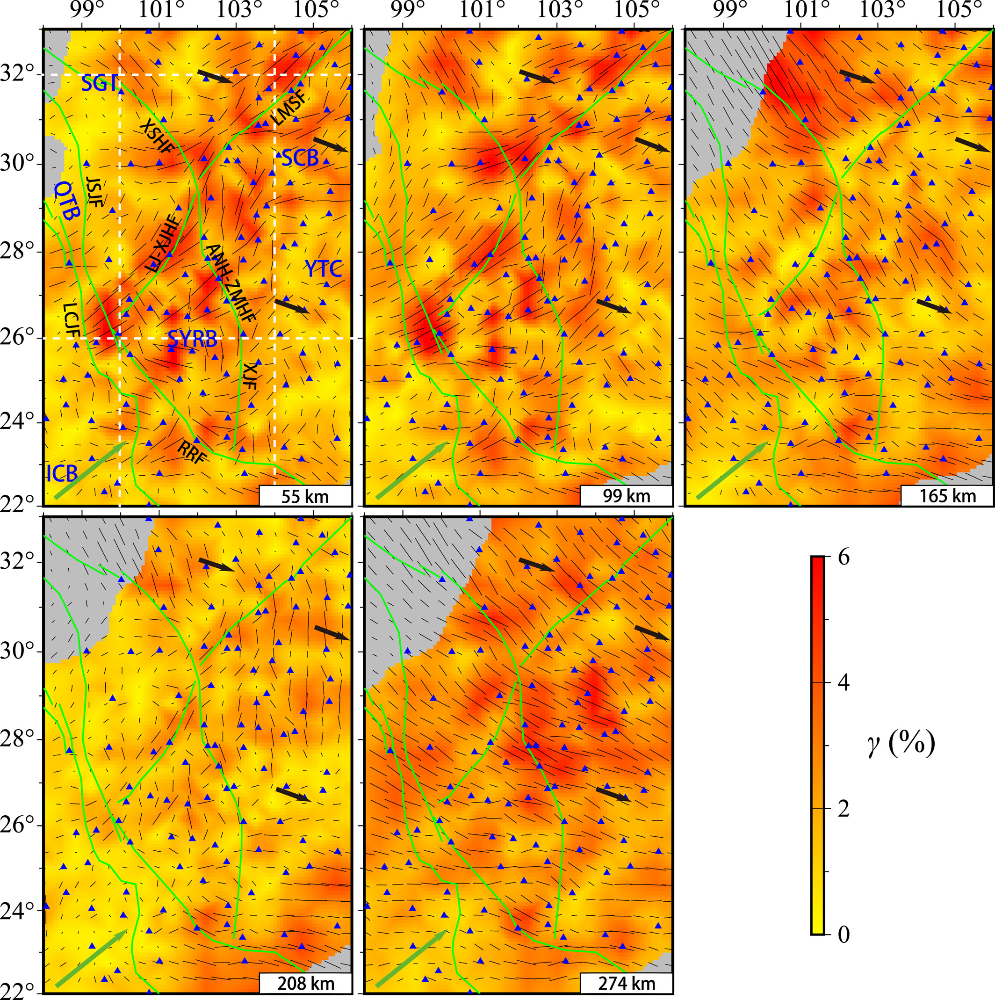
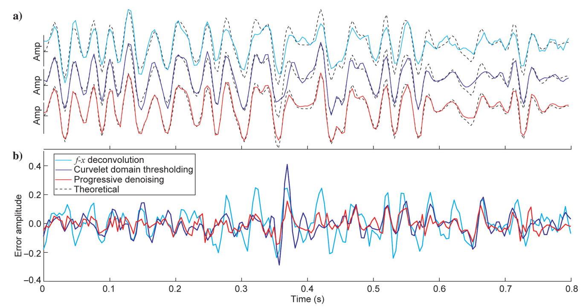
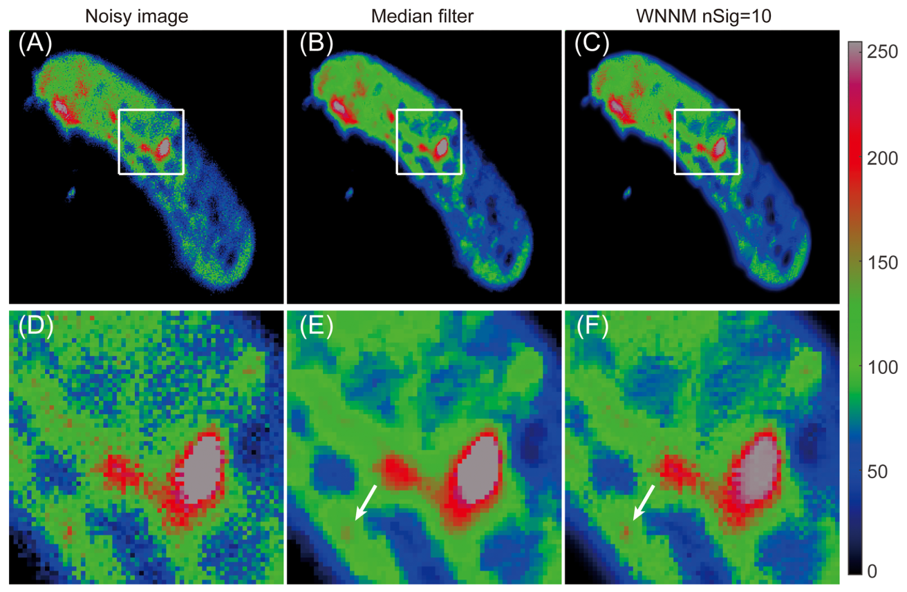

Ph.D. in Geophysics
Institute of Geology & Geophysics, Chinese Academy of Sciences
Advisor: Prof. Jinhai Zhang

Associate Research Professor of Geophysics
College of Geophysics
Chengdu University of Technology
Institute of Geology & Geophysics, Chinese Academy of Sciences
Advisor: Prof. Jinhai Zhang
Jilin University
Chengdu University of Technology
University of Padua, Italy
Peking University
Advisor: Prof. Li Zhao
Journal of Geophysical Research: Solid Earth, Geophysics, Earthquake Science, Frontiers in Earth Science
I study upper mantle deformation beneath the Alaska subduction zone using SKS splitting intensity tomography method. The derived 3D anisotropy model characterizes depth-varying mantle fabrics, providing key constraints on slab retreat, mantle flow, and lithosphere-asthenosphere coupling (Lin et al., 2026).

I am deeply interested in advancing seismic anisotropy tomography methods, with a particular focus on shear wave splitting tomography. My work involves applying full-wave anisotropy tomography techniques using shear wave splitting intensity data to explore the anisotropic characteristics of the crust and mantle (Lin & Zhao, 2024; Lin et al., 2026).

Attenuating random noise is crucial in seismic data processing. We have developed two methods, PID and MDF, to effectively reduce random noise in seismic data. Numerical examples demonstrate that both methods outperform conventional denoising techniques, delivering superior results (Lin & Zhang, 2020, 2022).

We applied the weighted nuclear norm minimization (WNNM) method to reduce the random noise in the NanoSIMS image. The low-rank property of the image is fully considered to suppress random noise while retaining reliable details of weak signals (Lin et al., 2020).

Undergraduate course covering numerical methods that attempt to find approximate solutions of problems rather than the exact ones.
Undergraduate course covers core theories and methods exploring the Earth's interior, including gravity, magnetism, seismology, heat flow and geoelectric observations.
Undergraduate course introduces fundamental observational techniques in seismology, including seismic data processing, waveform analysis and interpretation of seismograms.
Graduate course covering advanced methods and technologies (maily machine learning) for remote sensing, geophysics and Earth science investigations.
I am always looking for motivated students. If you are interested in working with me, please send me an email with your CV and research interests.
2025–
2025–
2025–
2026–
2026–
2023–
2024–
2025–
2025–
2025–